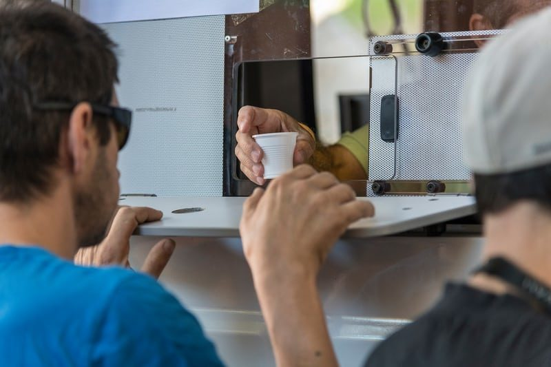
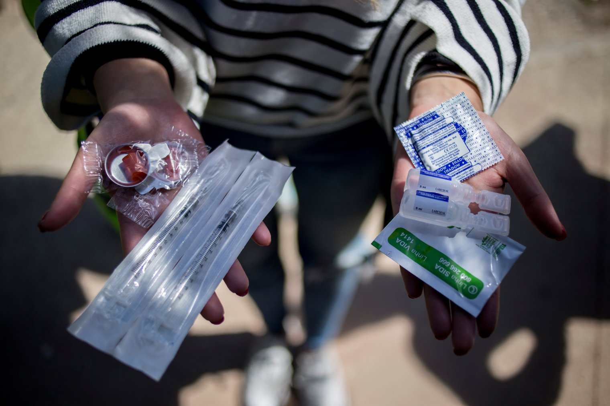
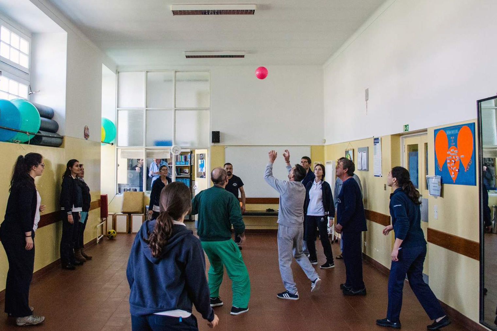
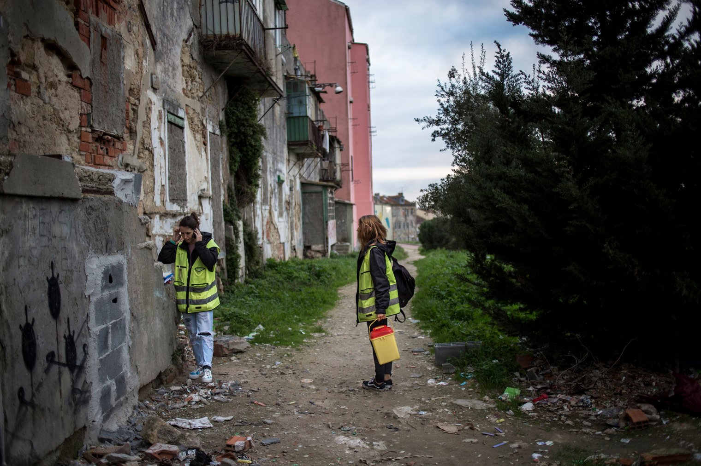

HARM REDUCTION
A nationwide network of harm reduction programmes and structures, including needle and syringe exchange programmes, low-threshold substitution programmes, drop-in centres/shelters, refuges, contact units and outreach teams, has been consolidated in areas of intensive drug use with the aim of preventing drug-related risks such as infectious diseases, social exclusion and delinquency.
Below are some of the most common and known approaches to harm reduction in Portugal.

Low-threshold Substitution Programmes
Ares do Pinhal Association is a Private Institution of Social Solidarity (IPSS) that has the mission
to assist people in situations of social exclusion. One of the intervention areas of this project
is meet the heroin-dependent population (with or without consumptions of other illicit or
licit substances), through an outpatient public health surveillance and psychosocial support
program, with methadone administration under low threshold requirement.

Needle Exchange Program
The Needle Exchange Program (PTS) in Portugal is a public health program aimed at reducing infections among drug users by minimizing the risk of exposure to infection. This program exists in Portugal since 1993 and in 2015 the program was revised, with the extension of the participation of pharmacies, which was expected to increase the effectiveness of the program, given their greater proximity to the addicted population.

Therapeutic Communities
The goal of the communities is to treat residents’ addictions and provide them with the tools they need to avoid relapsing into drug or alcohol use. This includes building a network of social supports, employment training and skills development. For some, the stay can be as little as a few months. Others may remain in the community for up to three years.

Outreach Teams
The role of outreach teams, one of the most important activities of harm reduction, consists of a daily tour of places where drug users gather. A team of two or three
people—one of whom has to have a professional background in psychology—gives out small
kits to drug users. The most important components in these kits are clean syringes and
needles for heroin-injecting users. The kit also contains hygiene agents, such as distilled
water, gauze, and a condom.
Previous
Next
The Portuguese model is based in humanism — seeing people with drug problems as people with an illness, says psychologist Domingos Duran, head of the treatment division of the government's Serviço de Intervenção nos Comportamentos Aditivos e nas Dependências. "By doing that, you can put the person in the framework of health interventions, not judicial interventions," he says.
When a dissuasion commission refers someone to treatment, that person typically seeks care in the country's national health service, which offers integrated outpatient treatment that addresses the individual's physical, psychological and social needs. Led by a physician or psychologist, the treatment team provides all services at one site to increase access to care. "We don't have methadone clinics, for example," says Duran. "We have methadone in all the public centers in this framework of an integrated model."
For those who aren't ready or who are unwilling to seek treatment, the emphasis is on harm reduction. That means psychologists often leave their offices and go into the streets to bring care to the drug users who need it. For example, Rita Lopes, a psychologist with a nongovernmental organization called Crescer, spends her days in one of two vans cruising set routes in Lisbon. In addition to a psychologist, these mobile outreach teams consist of a nurse, doctor and social worker who provide psychological support, exchange used syringes for clean ones, hand out condoms and urge drug users and other vulnerable populations to take advantage of shelters, hospitals and treatment centers.